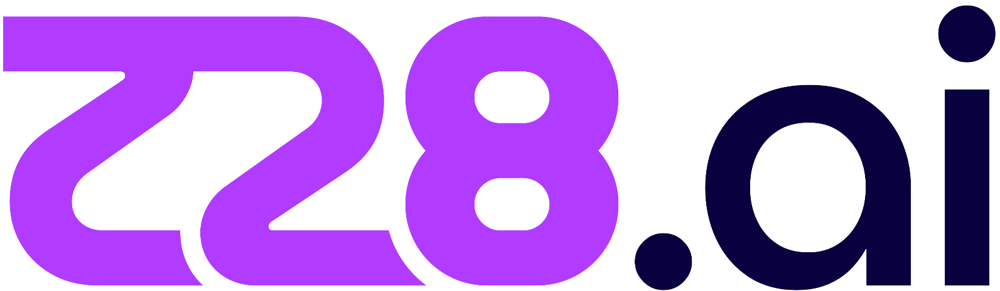

Feb 2026 – Present
Junior AI Engineer
z28.ai
- Engineered memory-efficient ETL pipelines with Pandas and BigQuery, processing multi-GB datasets (1M+ records).
- Built engine to extract thousands of attributes from unstructured HTML blob in database column.
- Implemented automated data quality profiling with null-rate and distribution statistics calculation.
- Designed snapshot modeling pipeline for borrower, loan, payment, and call-history training features.
- Conducted segment-level lift analysis to quantify repayment probability uplift across behavioral cohorts.
- Implemented LightGBM with class imbalance calibration and feature auditing, achieving 0.91 AUC.
- Developed ML interpretability pipeline to bridge high-performing models and stakeholder trust.
 Graduation Project
Graduation Project